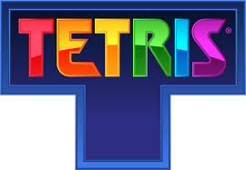

테트리스
게임 플레이 영상
게임의 역사
테트리스는 소련의 게임 디자이너 알렉세이 파지노프가 1984년에 개발한 퍼즐 게임으로, 소련의 컴퓨터 Elektronika 60에서 처음 구현되었습니다. 이후, 여러 플랫폼으로 확장되어 전 세계적인 인기를 끌었습니다.
테트리스는 1984년에 소련의 게임 디자이너 알렉세이 파지노프가 개발한 퍼즐 게임입니다. 테트리스는 다양한 모양의 블록을 사용하여 가로 줄을 완성시키는 것이 목표입니다. 블록이 완전히 채워지면 해당 줄은 제거되고, 점수가 올라갑니다.
게임이 진행될수록 블록이 떨어지는 속도가 빨라지며, 플레이어는 더 빠르게 반응하고 전략적으로 블록을 배치해야 합니다. 테트리스는 간단한 게임 플레이와 중독성으로 인해 전 세계에서 인기를 끌었으며, 다양한 플랫폼에서 출시되었습니다.
테트리스는 게임 역사상 가장 영향력 있는 게임 중 하나로, 게임의 디자인과 메커니즘은 여러 후속작과 변형 게임에 큰 영향을 미쳤습니다. 이 게임은 지금도 많은 팬들에게 사랑받고 있으며, 다양한 대회와 이벤트에서 즐길 수 있습니다.